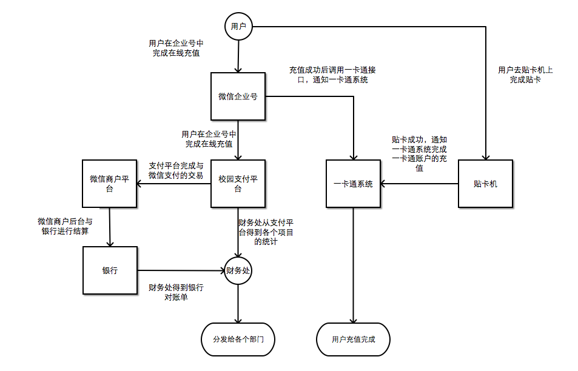

3. 充值金额流转说明¶
一卡通用户使用在线充值其金额的流转如下：
- 用户在企业号中完成充值，此时充值金额从用户账户充入《商户后台》，《支付平台》会记录每笔充值的交易详情。
- 用户在线充值完成的同时《企业号》会调用一卡通充值接口，用户的充值金额会记录在一卡通系统中，但此时未充入用户一卡通账户。
- 《商户后台》每天会与我校的银行账户结算，需要注意的是银行对账单显示的日期总是比《支付平台》显示的日期晚一天。结算后，通过微信支付完成的一卡通交易金额转入我校银行账户。
- 财务处会定期处理来自该银行账户的流水，处理方式为根据《支付平台》的支付项目分类统计，给各个部门转账对应金额。
下图展示了一卡通在线充值的整个过程。
